在這篇中
我們會做以下動作
git fetch：檢查分支上有無更新節點
git pull：將分支上有更新的資料全部擷取
git rebase：已分支為基礎，將另一分支的節點(commit)新增過去
git push：將新增的節點上傳到 Bitbucket 上
1.git fetch
我們先將當前分支從 modify_ted 切換為 master
在 master 分支上雙擊滑鼠即可切換
切換完成後當前分支會顯示為粗體字
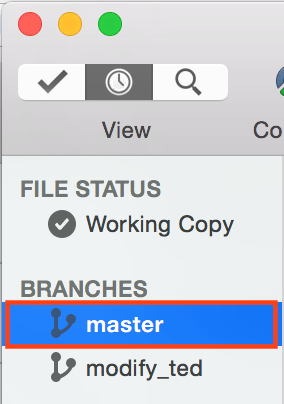
這時候需要檢查分支有無更新節點
按下 Fetch 按鈕並點選 OK
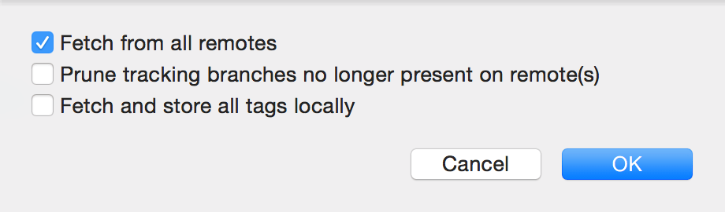
2.git pull
在檢查更新結束後
如果分支有需要進行 Pull
則會有下列顯示
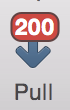
若是分支需要更新
則點選 Pull 按鈕並點選 OK
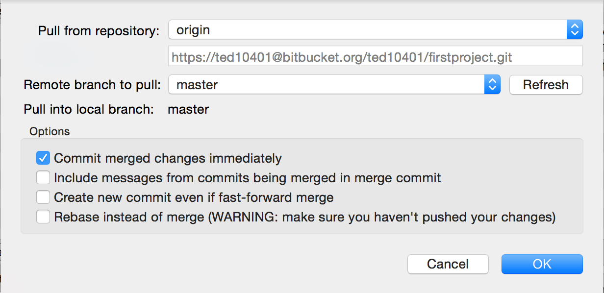
3.git rebase
前置動作完成了
接下來就要將之前在本地端做的修改
新增到伺服器上
讓其他專案成員能夠 git fetch 到更新節點
先將分支切回 modify_ted
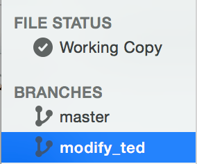
在 master 分支上點選右鍵
並選擇 Rebase current changes onto master
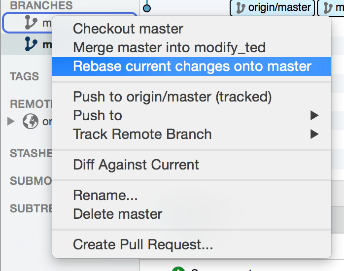
點選 OK 後即完成 modify_ted rebase master 的動作
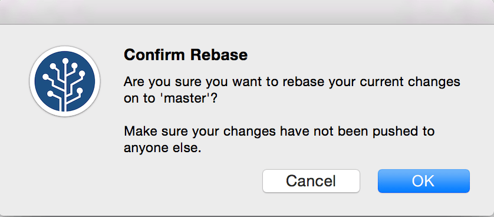
到這邊是將本地端新增的節點
已 master 分支為基礎
重新將節點整合
接下來切回 Master 分支
並對 modify_ted 分支點選右鍵
並選擇 Rebase current changes onto modify_ted
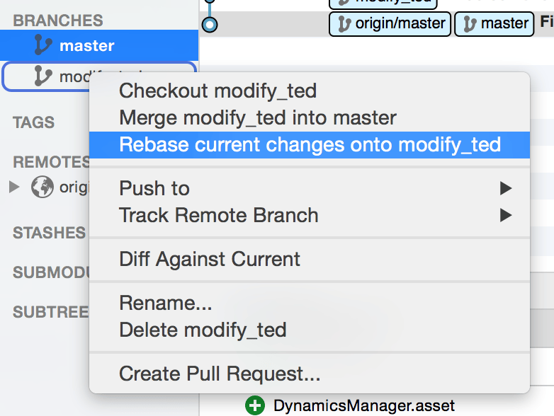
點選 OK 後即完成了將資料新增到 master 分支的動作
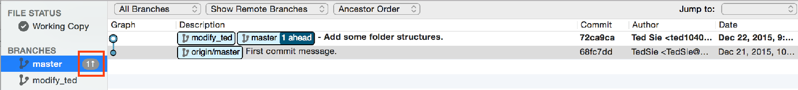
4.git push
完成節點整合後
按下 Push 按鈕並點選 OK
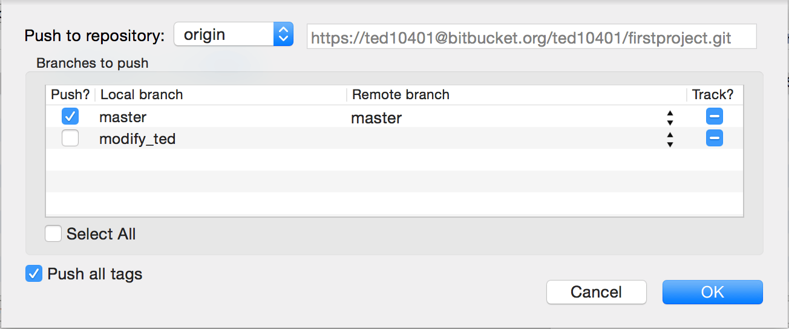
則完成了將本地端分支更新到伺服器上的所有步驟
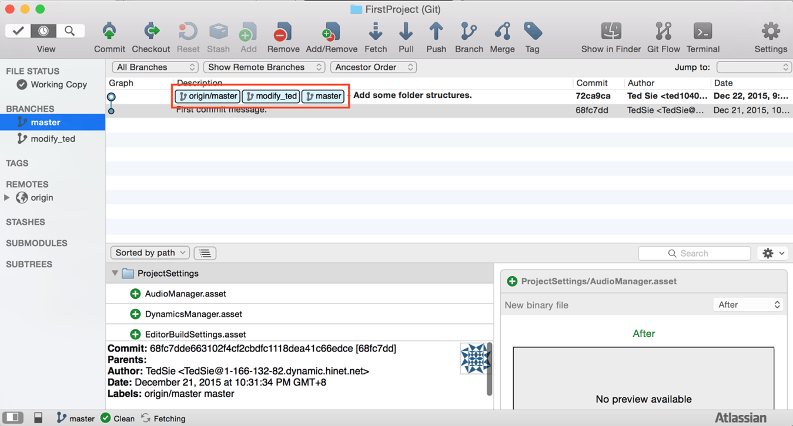